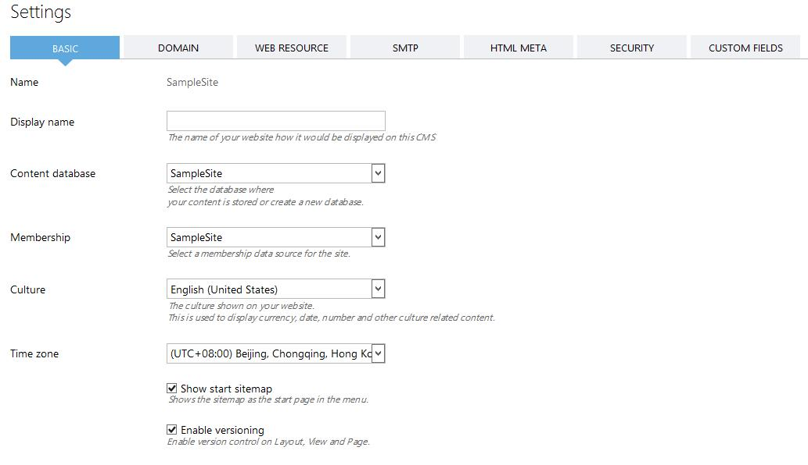
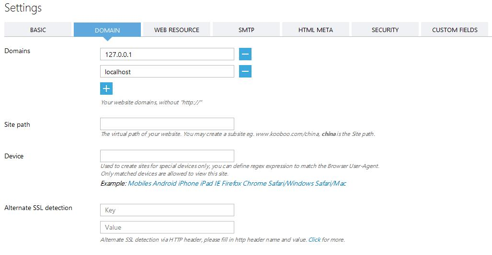
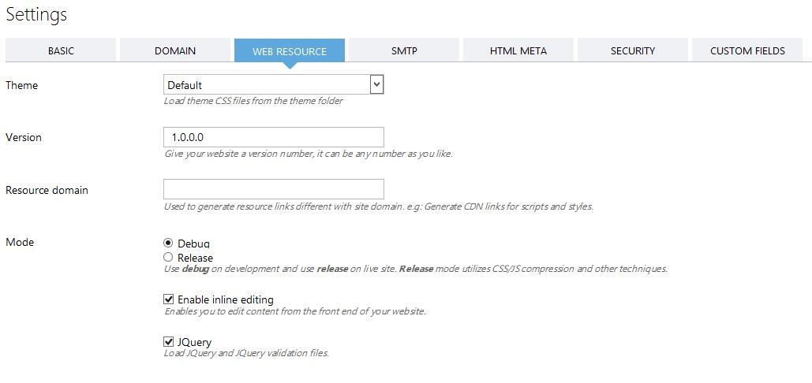
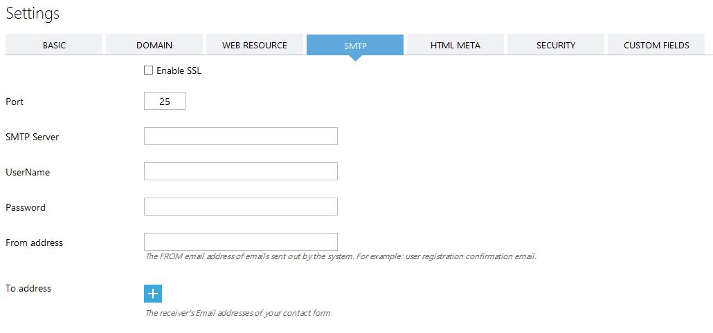
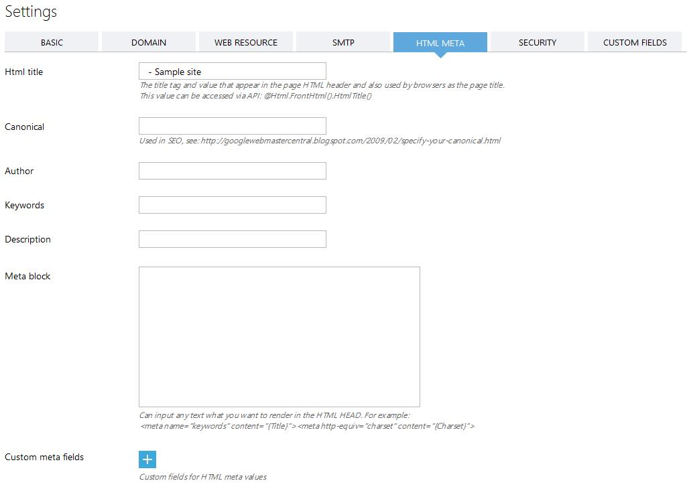

管理站点间的关系，站点可以有子站点，子站点继承父站点的部分配置数据，同时子站点还可以根据需要，本地化由父站点继承而来的数据。通过继承和本地化，可以让子站点在用最小的改动代价，来完成一个与父站点功能类似，但有部分不同的网站。
在创建子站点时，可以选择使用与Kooboo CMS中任何已经存在的站点的相同的内容数据库，也可以选择新建一个新的内容数据库。如果选择新建内容数据库时，新的内容数据库会复制父站点使用的内容数据库，但之后他们各种独立，不再有任何关系。
用于修改站点的配置信息，这些信息可以包括:
（1）基础设置
- 显示名称
- 使用的内容数据库
- 使用的会员数据库
- 站点文化设置
- 时区设置
- 是否显示站点管理首页的页面结构图开关
- 启用版本控制开关

（2）域名设置
- 域名
- 站点虚拟目录
- 使用的设备
- SSL反向代理HTTP Header设置

（3）站点资源设置
- 站点皮肤设置
- 站点版本设置
- 站点运行模式设置
- 在线编辑开关
- 引用JQuery开关

（4）SMTP设置
- SMTP账号相关设置

（5）HTML META
- HTML标题
- Canonical
- 作者
- 关键字
- 描述
- Meta块
- 定义Meta字段

（6）安全设置
- 密钥
（7）自定义字段
- 开发者自定义字段
- 自定义设置
- 站点用户管理
- URL地址重定向
- Robots.txt